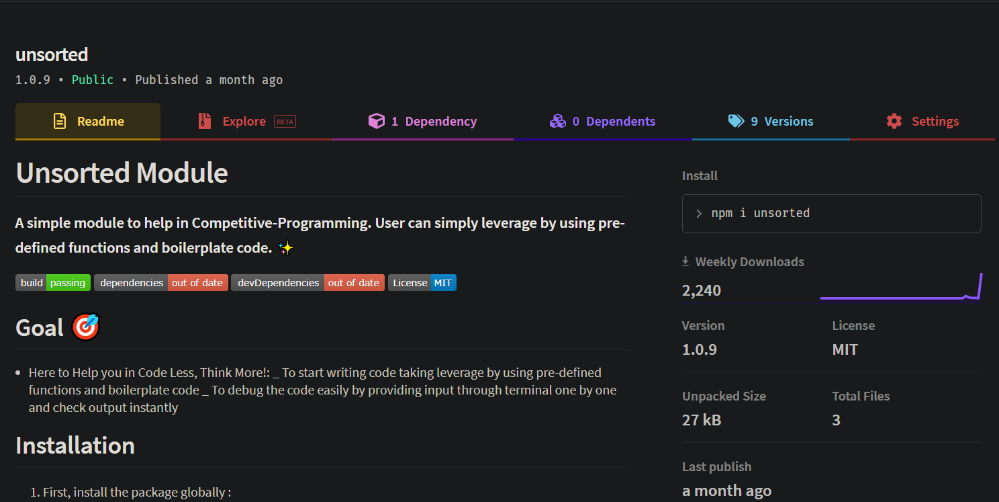
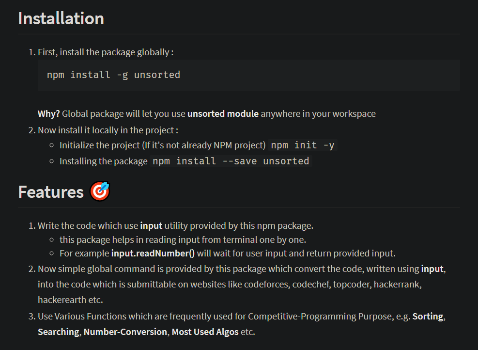

NPM Module Unsorted (Published)
NPM Module to help in Competitive-Programming with about 2000 Weekly Downloads.
User can simply leverage by using Pre-Defined Functions and Boilerplate Code.
Features: Use all Sorting Algorithms, Array operations like Min, Max, Average, Sum, HashMap, Mathematical Operations for generating Catalan Numbers, Karatsuba Method, Newton's Method, Sieve, Number Conversion etc.
Role: Developer
Technologies:
- - JavaScript(EcmaScript 6)
- - Node JS
Package Unsorted

Features
